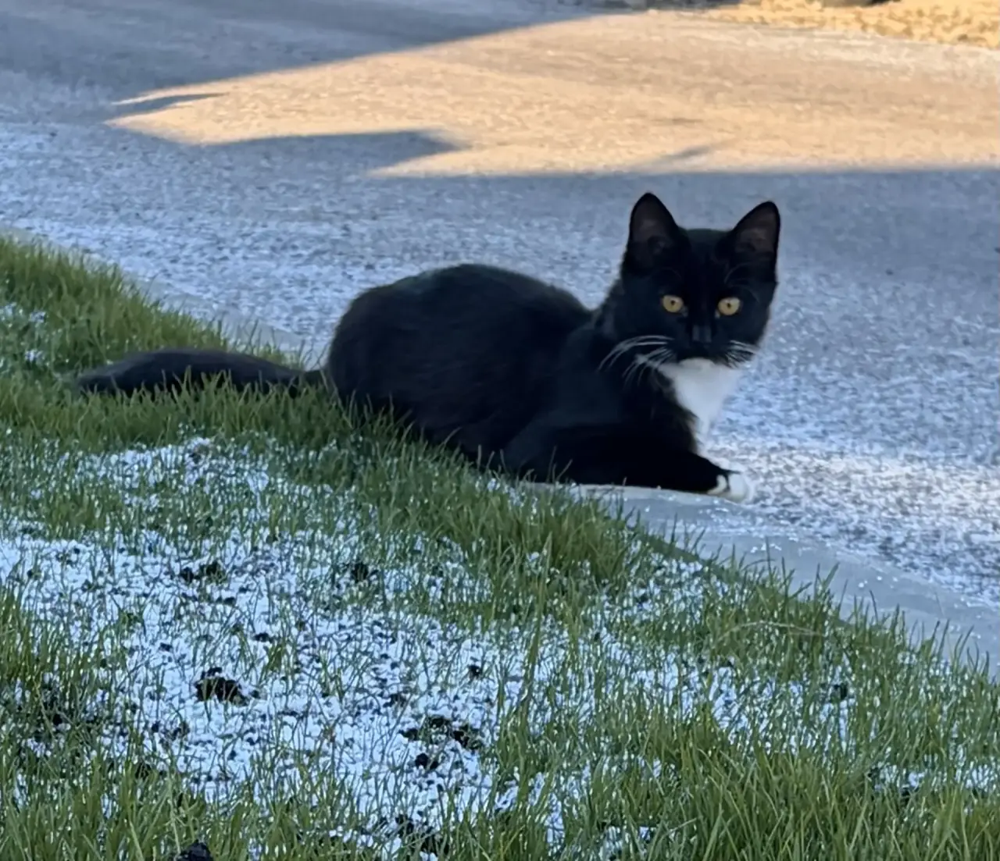
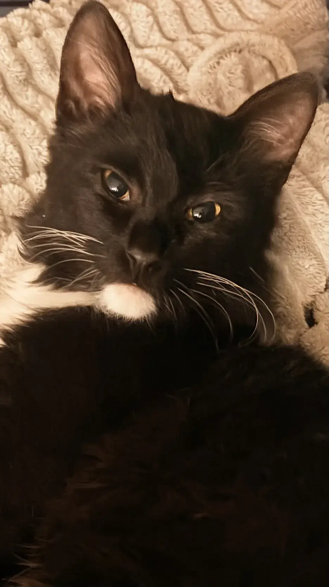
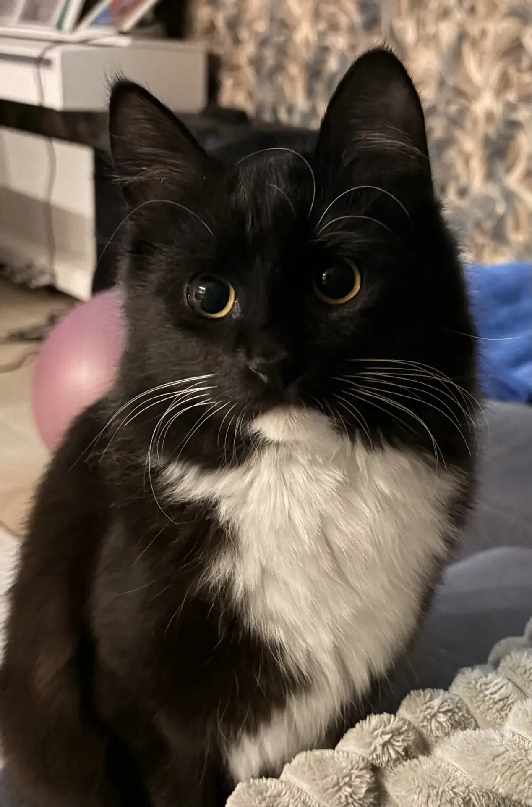

Природа обделила его размерами, но щедро наградила характером. Это классический представитель уличной фауны — маленький, худенький, с вечно настороженными ушами. Его любопытство не знает границ: он готов залезть в любую щель, проверить каждую сумку и изучить любой пакет, который вы принесли из магазина.
Однако главная черта его натуры — это наглость. Дворинин не знает слова «нет». Если он решил, что вы должны поделиться бутербродом, он будет смотреть вам прямо в душу до победного конца. Голод — его вечный спутник. Кажется, что он ест не для того, чтобы жить, а живёт для того, чтобы выпросить ещё кусочек.

Утро — это время Дворинина-ангела. Он ласков, прилипчив и готов часами сидеть на коленях, лишь бы вы вовремя насыпали корм. Вечером же включается режим «неприкосновенности». В руки его не взять: он выворачивается, уходит в тень и смотрит оттуда с явным превосходством.
Несмотря на свою независимость, Дворинин — настоящий философ. Он умеет ценить простые вещи: солнечное пятно на асфальте, шуршащий пакет и вкусную сосиску.

Кот Дворинин — это маленькая, но гордая личность. Он не принадлежит никому, но при этом умело манипулирует всеми. Наблюдать за ним — сплошное удовольствие. Главное — не забывать прятать еду и не пытаться брать его на руки вечером.